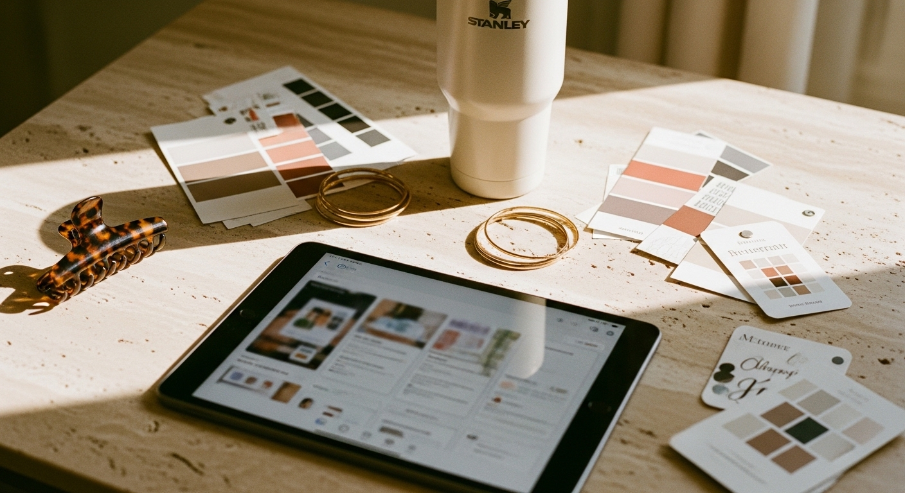

Free Instagram post templates that actually look professional

You have spent an hour staring at a blank Canva canvas. Again. The post needs to go up today, but nothing looks right. The fonts feel wrong. The colors clash. And by the time you finish, it looks like every other template on the internet.
Free Instagram post templates are supposed to save you time - but most of them create a different problem. They are either so generic that your feed looks like everyone else's, or so complicated that customizing them takes longer than starting from scratch.
This post breaks down exactly what makes a free template actually useful, where to find ones worth downloading, and how to make them work for your specific business - without your feed looking like a copy-paste job.
WHY MOST FREE TEMPLATES WASTE YOUR TIME
Not all free templates are created equal. Some are genuinely helpful starting points. Most are not.
The biggest issue is that free template libraries prioritize volume over quality. They need thousands of options to look impressive, so they churn out designs that technically work but do not actually help your business stand out. You end up with templates that look fine in the preview but fall apart the moment you add your own content.
Common problems with free Instagram post templates:
- The text boxes are too small for real sentences
- The color schemes only work with specific images
- They are designed to look good in a grid - not to be read
- Everyone else is using them too
This does not mean free templates are worthless. It means you need to know what to look for - and what to avoid.
WHAT SEPARATES A USEFUL TEMPLATE FROM A PRETTY ONE
A good template does one thing well: it gives you a reliable structure you can customize quickly without design skills.
The best free Instagram post templates share a few things in common.
They use readable fonts at readable sizes. If you cannot read the text at a glance while scrolling on your phone, the template fails its basic job. Look for templates with clean sans-serif fonts or simple serif fonts - not decorative scripts for body text.
They leave room for your actual content. A template with a tiny text box centered on a busy background might look artistic, but it is useless for sharing tips, quotes, or any content longer than three words.
They have a clear visual hierarchy. Your eye should know exactly where to look first. The most important element - usually the headline or key message - should be the most prominent. If everything on the template competes for attention, skip it.
They work with your brand colors. This is where most free templates fail. They are built around the designer's palette, not yours. Look for templates with simple color blocks you can easily swap, rather than complex gradients or color combinations baked into the design.
They are actually editable. Some templates technically allow customization but fight you at every step. If changing the font or moving an element breaks the whole layout, the template is not saving you time - it is creating a different kind of problem.
WHERE TO FIND FREE INSTAGRAM POST TEMPLATES THAT WORK
The platform you choose matters less than how you filter what you find.
Canva remains the most accessible option for most small business owners. The free plan includes thousands of Instagram post templates, and the editing interface is intuitive enough that you do not need design experience. The catch: everyone else is using Canva too. The most popular templates are overexposed.
To find better options in Canva, skip the first few pages of results. Filter by specific styles. Search for templates with your niche in the keyword (like "coach Instagram template" or "therapist Instagram post") rather than generic terms.
Adobe Express offers a solid free tier with templates that tend to look slightly more polished than average. The editing tools are straightforward, though not quite as flexible as Canva for quick customization.
Figma's community section has free Instagram templates created by designers who actually care about design principles. These tend to be more minimal and more customizable - but they require a bit more comfort with design software.
Pinterest itself is a useful search tool. Looking up "free Instagram post templates" surfaces templates hosted on various platforms, and you can often spot which styles match your brand before committing to a specific tool.
If you want templates designed specifically for coaches, consultants, and service providers - with brand colors, fonts, and layouts that actually work together - the Switzertemplates Instagram bundles include coordinated post templates, story templates, and highlight covers ready to customize in Canva.
HOW TO CUSTOMIZE FREE TEMPLATES WITHOUT LOOKING GENERIC
The template is a starting point. What you do with it determines whether your content looks professional or forgettable.
Start with your brand fonts. Swap out whatever decorative font the template uses for your actual brand typography. Consistent fonts across your posts create visual cohesion that makes your feed look intentional - even if every post uses a different layout.
Replace the color palette entirely. Do not try to "make your colors work" with the template's existing scheme. Delete the original colors and apply your own. Most free templates use three to five colors - replace each one with a color from your brand palette.
Adjust the spacing. Free templates often have elements crammed together to look impressive in a small preview. Give your text room to breathe. Add padding around headlines. Leave white space where the original design had none.
Simplify wherever possible. If the template has six different elements, consider whether you need all of them. The most professional-looking posts usually have fewer components - not more. Remove decorative elements that do not serve your message.
Test on mobile before posting. Open the design on your phone and view it at actual size. If you have to squint to read the text or the important elements get lost, go back and adjust. Your audience sees your posts on a small screen while scrolling quickly - design for that reality.
BUILDING A CONSISTENT FEED WITH FREE TEMPLATES
One good template used well beats fifty random templates used inconsistently.
The accounts that look most professional on Instagram usually work from a small set of repeating layouts. They might have one template for quotes, one for tips, one for testimonials, and one for promotional posts. That is it. The repetition creates recognition.
To build this kind of consistency with free templates, start by selecting three to five templates that share a similar visual style. They do not need to be identical - but they should feel like they belong together. Same font families. Compatible color usage. Similar spacing and alignment.
Create a simple content plan that rotates through your selected templates. Monday might always be your quote template. Wednesday might be your tip carousel. Friday might be your testimonial layout. The predictability helps you create faster and helps your audience recognize your content in their feed.
Save your customized versions. Once you have adjusted a free template with your brand fonts, colors, and spacing, save that version as your working template. Do not start from the original every time - start from your branded version.
This approach turns free templates from a time sink into an actual system. You stop reinventing your content design with every post. You just fill in the new content and publish. ✅
WHEN FREE TEMPLATES STOP BEING ENOUGH
Free templates work well for getting started. They help you show up consistently without hiring a designer or spending hours learning design software.
But there is a ceiling.
Free templates are designed to appeal to the widest possible audience. They cannot be designed specifically for your business, your niche, or your brand positioning. At some point, you either invest time creating custom designs yourself - or you invest in templates built for your specific type of business.
Signs you have outgrown free templates:
- You spend more time trying to make templates work than actually creating content
- Your feed looks inconsistent despite your best efforts
- You notice your competitors using the same exact templates
- Your brand has grown beyond the generic look
The transition does not have to be expensive or complicated. A single coordinated template bundle - with matching posts, stories, and brand elements - can replace the patchwork of free templates you have been wrestling with.
MAKING YOUR TEMPLATES WORK HARDER
Whether you stick with free Instagram post templates or eventually invest in premium options, the principles stay the same. The template is not the content. It is the container.
What goes inside - your actual message, your perspective, your expertise - is what builds your business. A beautiful template with weak content does nothing. A simple template with genuinely useful content builds trust and attracts clients.
Use templates to show up consistently. Use them to look professional. Use them to save time so you can focus on the work that actually matters - serving your clients, building your offers, growing your business.
The goal is never to have the prettiest feed. The goal is to have a presence that makes the right people want to work with you.
If you are ready for templates designed specifically for coaches and service providers - with coordinated branding across your Instagram, website, and marketing materials - 📥 browse the full collection at switzertemplates.com or visit the Etsy shop to see what other business owners are using to look professional without starting from scratch.
Let me know in the comments below if you want me to cover any branding or marketing topics in more depth, and I'll make sure to create a blog post about it in the future.